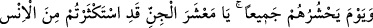
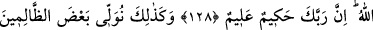
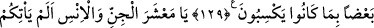
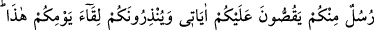
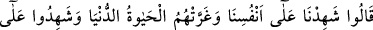
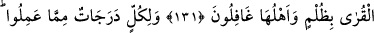
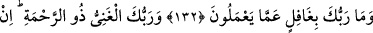
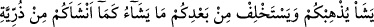
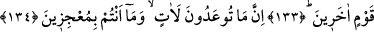
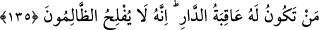

HAŞR VE HESAB,
İLÂHÎ ADÂLET
128. Allah onların hepsini bir araya topladığı gün, “Ey cinler (şeytanlar)
topluluğu! Siz insanlarla çok uğraştınız” der. Onların, insanlardan olan dostları ise:
“Ey Rabbimiz! (Biz) birbirimizden yararlandık ve bize verdiğin sürenin sonuna
ulaştık” derler. Allah da buyurur ki: Allah’ın dilediği hariç, içinde ebedî kalacağınız
yer ateştir. Şüphesiz Rabbin hikmet sahibidir, bilendir.
129. İşte böylece işledikleri günahlardan ötürü zalimlerin bir kısmını diğer bir
kısmının peşine takarız.
130. Ey cin ve insan topluluğu! İçinizden size âyetlerimi anlatan ve bu günle
karşılaşacağınıza dair sizi uyaran peygamberler gelmedi mi! Derler ki: “Kendi
aleyhimize şâhitlik ederiz.” Dünya hayatı onları aldattı ve kâfir olduklarına dair
kendi aleyhlerine şâhitlik ettiler.
131. Gerçek şu ki: Halkı habersizken, Rabbin haksızlık ile ülkeleri helâk edici
değildir.